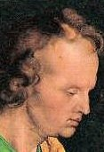
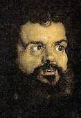
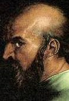
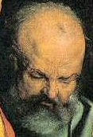

|
DIE VIER APOSTEL (1526)
Öl auf Holz, zwei Tafeln von je 216 x 76 cm
Alte Pinakothek, München
∆
Kommentar
Mit den 1526 gemalten Vier Aposteln hat Dürer zwei Jahre vor
seinem Tod ein letztes monumentales Werk geschaffen, das gleichsam
als Vermächtnis des Künstlers gelten kann: die beiden Tafeln weisen eine perfekte Symmetrie auf; die Silhouette der Figuren ist weit entfernt von der bis dahin üblichen hieratischen Darstellung der gesamten Gestalt und verleiht dem Werk Grandiosität. Die Darstellung der Figuren auf zwei verschiedenen Ebenen gibt dem Bild seine Tiefe. Der Rhythmus entsteht durch ein Wechselspiel von Licht und Farbe. Die Tafel, auf der Johannes und Petrus zu sehen sind, scheint von Licht gestreift und taucht das Bild in warme Farben. Die Mäntel von Paulus und Markus dagegen strahlen durch helles weißes Licht hervorgerufene Kälte aus. Mit ihrem Gesichtsausdruck lassen sich die Apostel den vier Gemütsarten des Menschen zuordnen: das sanguinische Temperament wird mit dem sanftmütigen und dabei hochroten Gesicht des Apostels Johannes ausgedrückt, das cholerische Temperament findet sich in den leicht aggressiven Zügen des Apostels Markus wieder, das melancholische Temperament zeigt sich im strengen Blick des Apostels Paulus und das phlegmatische Temperament lässt sich an dem überdrüssig zu Boden gerichteten Blick des Apostels Petrus erkennen.
|

Johannes
|

Markus
|

Paulus
|

Petrus
|
∆
Geschichtsanalyse
Im Jahr 1526 schenkt Dürer die Vier Apostel der Nürnberger Stadtverwaltung, um ihre Mitglieder u. a. für ihre Haltung bei dem Konflikt zu würdigen, nach dessen Beilegung sich die Stadt der lutherischen Reformation angeschlossen hatte. Die Gemälde waren für das Rathaus und nicht für eine Kirche bestimmt. Die beiden Tafeln gehören allerdings nicht, wie manchmal behauptet wird, zu einem hypothetischen Triptychon. Auf der linken Tafel verdeckt der von Luther bevorzugte Apostel Johannes den Apostel Petrus, Begründer der römischen Kirche, während sich auf der rechten Tafel der Apostel Paulus, der in der Regel als geistiger Vater des Protestantismus angesehen wird, vor den Apostel Markus stellt. Dieses Gemälde ist zweifelsohne von protestantischer Inspiration.
Es ist bekannt, dass Dürer mit den
vier Aposteln die vier Gemütsarten des Menschen darstellen wollte: sanguinisch, phlegmatisch, cholerisch und melancholisch, wobei jedes Temperament den ursprünglichen Elementen der Schöpfung zugeordnet ist. Die vier Gemütsarten sollen bei Adam und Eva noch ausgeglichen gewesen sein. Im Anschluss an den Sündenfall überlagerte dann immer ein Temperament im Menschen die drei anderen. Durch die Darstellung der Physionomie - des Temperaments - eines jeden Apostels gibt diese Theorie gleichzeitig Aufschluss über das Menschenbild im Protestantismus und damit über den Protestantismus selbst. Wenn sich Dürer auf dieses Bild bezieht, dann, um noch einen Schritt weiterzugehen, denn die vier Figuren bestehen als Ganzes von göttlicher Ordnung, das seinen einzelnen Teilen übergeordnet ist. Auf diese Weise gelangt er zum Konzept der Kirche, wie sie vom Luthertum definiert wurde: ein Körper, der sich aus untereinander gleichgestellten Individuen zusammensetzt, die in keiner hierarchischen Beziehung zueinander stehen.
Unter dem Gemälde zitiert
Dürer ausführlich aus den Evangelien und verwendet dabei die
Luther-Übersetzung von 1522. Den Zitaten vorangestellt sind an die
weltlichen Mächte gerichtete Warnungen, die „fehlbaren
Ansichten der Menschen nicht für Gottes Wort” zu halten in diesen gefahrvollen Zeiten. Damit macht der Künstler eine Anspielung auf die katholische Kirche und die radikalen Formen des Protestantismus, die während der Bauernkriege entstanden waren. Aus dieser Haltung spricht die Treue Dürers gegenüber Luther. Somit sind die Vier Apostel gleichzeitig
Ausdruck eines Strebens nach Harmonie und spiritueller
Ausgeglichenheit in einer von Konfliken erschütterten Welt. „In
meiner Jugend”,
vertraut Dürer seinem Freund, dem protestantischen Humanisten
Melanchthon an, „habe
ich Vielfalt und Neuerung geliebt... Jetzt, als
alter Mann, habe ich begriffen… dass die Einfachheit die höchste
Zierde der Kunst ist.” Auf alle überflüssigen Details verzichtend zeichnet Dürer den Faltenüberwurf nur noch in Form weiter mit Komplementärfarben ausgemalter Umhänge ohne jeden Schmuck und lässt selbst die Heiligenscheine wegfallen. Die vier Männer haben trotz ihrer Einfachheit eine Ausstrahlungskraft und Gegenwärtigkeit, durch die ihre Heiligkeit wesentlich stärker zum Ausdruck kommt als durch jedes andere äußere Zeichen.
∆
Links
Website der Alten Pinakothek in München:
http://www.pinakothek.de/alte-pinakothek/
∆
|